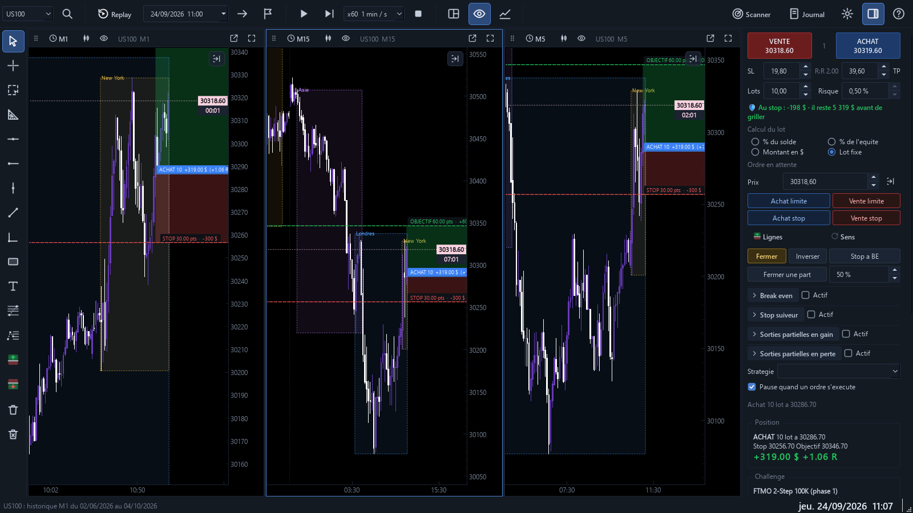
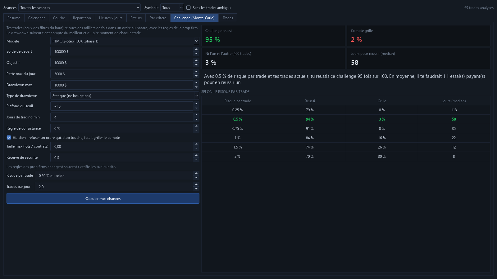
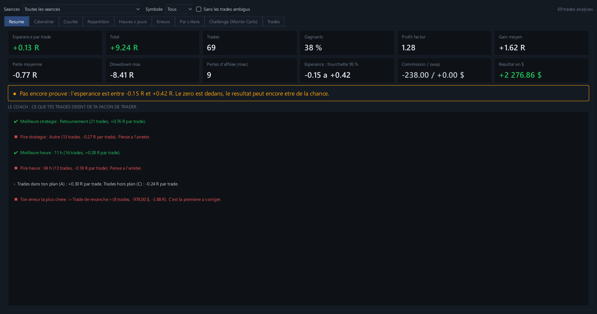
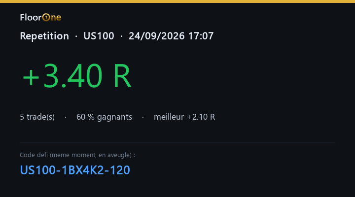

Passe ton challenge prop firm en replay, avant de le payer pour de vrai.
Rejoue n'importe quelle journée de marché bougie par bougie, sur plusieurs graphiques synchronisés, avec les vraies règles d'Apex, Topstep ou FTMO. Puis découvre, chiffres à l'appui, si ta stratégie tient la route.

Tout ce qu'il faut pour s'entraîner sérieusement
Pas un simple lecteur de graphiques : un simulateur pensé pour les traders qui visent un compte financé.
Replay multi-graphique
1 à 4 graphiques (M1 à D1) qui avancent ensemble, du temps réel jusqu'à x3000. Aucune bougie ne dévoile l'avenir.
Challenge prop firm
Apex, Topstep, FTMO ou tes règles : perte max du jour, drawdown suiveur, consistance. Appliquées en direct.
Analyse honnête
Espérance, profit factor, drawdown en R, verdict statistique : un edge se prouve, il ne se ressent pas.
Coach intégré
Il repère tes gagnants coupés trop tôt, tes trades de revanche, ton surtrading et tes pires heures.
Mode aveugle
Date tirée au hasard et cachée : fini le biais de la journée dont tu te souviens.
Défis entre traders
Un code partage exactement le même moment de marché. Compare tes R avec ceux de tes amis.
Indicateurs essentiels
EMA, VWAP, niveaux de la veille, sessions Asie / Londres / New York, figures harmoniques automatiques.
Journal automatique
Captures à l'entrée et à la sortie, setup, respect du plan, émotion, notes. Export Excel.
Tes données
Historique de ton MetaTrader 4, fichiers CSV (MT4, MT5…) ou crypto Binance téléchargée gratuitement.
Le challenge, avec les vraies règles
Choisis Apex, Topstep, FTMO ou règle ton propre challenge. ASHIYR Replay applique chaque règle à chaque mouvement de prix, flottant compris.
- Drawdown statique, suiveur en direct ou en fin de journée, avec son plafond
- Perte max du jour, jours minimum, règle de consistance
- Une ligne sur le graphique : le prix exact qui grillerait ton compte
- Compte grillé = compte bloqué, comme en vrai

Tes chances réelles de réussir
Le Monte-Carlo rejoue tes propres trades des milliers de fois avec les règles de la prop firm.
- Pourcentage de réussite et de compte grillé
- Le risque par trade qui te donne le plus de chances
- Tient compte du pire et du meilleur moment de chaque trade
- Tu sais combien d'essais payants prévoir avant de dépenser 1 €

Un verdict qui ne te ment pas
Avec 20 trades, n'importe qui peut afficher un beau résultat. ASHIYR Replay calcule la fourchette de ton espérance et ne parle d'edge que s'il est statistiquement prouvé.
- Résultats par setup, heure, jour, sens, émotion
- Coach : ce que tes trades disent de ta façon de trader
- Trades ambigus signalés : le replay n'est jamais plus gentil que le marché

L'entraînement comme un sport
Répète 20 fois l'ouverture de New York en une soirée, en aveugle. À la fin de chaque répétition, une carte de résultat à partager, avec un code défi : tes amis rejouent exactement le même moment.
Pourquoi pas un replay classique ?
Les outils de replay te montrent le passé. ASHIYR Replay te prépare au challenge.
| Replay classique | ASHIYR Replay | |
|---|---|---|
| Replay multi-graphique synchronisé | ✓ | ✓ |
| Règles de prop firm appliquées en direct | — | ✓ |
| Probabilité de réussir ton challenge (Monte-Carlo) | — | ✓ |
| Verdict statistique sur ton edge | — | ✓ |
| Coach comportemental | — | ✓ |
| Mode aveugle et codes défi | — | ✓ |
| Logiciel installé, fonctionne sans navigateur | — | ✓ |
Tarifs simples
Commence par 7 jours gratuits, sans carte bancaire. Toutes les fonctions sont incluses dans chaque formule.
ASHIYR30 au paiement,
-30 % à vie sur ton abonnement (20 €/mois au lieu de 29 €). Réservé aux 100 premiers.Mensuel
- Toutes les fonctions
- Mises à jour incluses
- 2 PC par licence
Annuel
- Toutes les fonctions
- Mises à jour incluses
- 2 PC par licence
À vie — lancement
- Toutes les fonctions
- Toutes les mises à jour de la version 2
- 2 PC par licence
Prix TTC. Paiement sécurisé par Lemon Squeezy, notre revendeur officiel, qui gère la TVA. Teste gratuitement 7 jours avant d'acheter. Conditions de vente
Questions fréquentes
Est-ce que je dois fournir mes propres données de marché ?
Oui. ASHIYR Replay lit l'historique M1 de ton MetaTrader 4 (tous les symboles de ton courtier), les fichiers CSV exportés de MT4, MT5 ou d'autres plateformes, et télécharge gratuitement les données crypto de Binance. L'historique grossit tout seul à chaque lancement.
Sur quels ordinateurs ça marche ?
Windows 10 et 11 (64 bits). Pas de version Mac pour l'instant.
Les règles des prop firms sont-elles exactes ?
Les modèles Apex, Topstep et FTMO reprennent leurs règles principales, et tout est modifiable. Les prop firms changent régulièrement leurs conditions : vérifie-les toujours sur leur site avant un vrai challenge.
Est-ce que ça garantit que je vais réussir mon challenge ?
Non. ASHIYR Replay est un outil d'entraînement : il te montre honnêtement ce que valent tes trades et tes chances. Les résultats simulés ne garantissent pas les résultats futurs.
Puis-je l'utiliser sur plusieurs ordinateurs ?
Oui, 2 PC par licence. Pour changer d'ordinateur, libère la licence depuis le menu ? → Licence.
Faut-il une connexion internet ?
Seulement pour activer la licence et la vérifier une fois par semaine. Tu peux t'entraîner jusqu'à 14 jours sans internet.
Puis-je arrêter mon abonnement ?
Oui, à tout moment, en un clic depuis l'email de ton achat. Tu gardes l'accès jusqu'à la fin de la période déjà payée, sans autre prélèvement. Les 7 jours d'essai gratuit servent à tout tester avant d'acheter.
Windows affiche « Windows a protégé votre ordinateur »
C'est normal pour un logiciel récent. Clique sur « Informations complémentaires » puis « Exécuter quand même ».
Prêt à t'entraîner comme un pro ?
7 jours gratuits, toutes les fonctions, sans carte bancaire.
Télécharger ASHIYR Replay